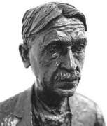
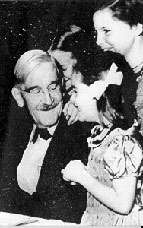

Philosophy Pages
| Dictionary | Study Guide | Logic | F A Q s | ||
|---|---|---|---|---|---|---|
| History | Timeline | Philosophers | Locke | |||
| Philosophy Pages
| Dictionary | Study Guide | Logic | F A Q s | ||
|---|---|---|---|---|---|---|
| History | Timeline | Philosophers | Locke | |||
|
Life and Works . . Knowledge . . Morality Bibliography Internet Sources |
Educated in his native Vermont and at Johns Hopkins University, John Dewey enjoyed a lengthy career as an educator, psychologist, and philosopher.
He initiated the progressive laboratory school at the University of Chicago, where his reforms in methods of education could be put into practice.
As a professor of philosophy, Dewey taught at Michigan, Chicago, and Columbia University.
He was instrumental in founding the
 American Association of University Professors as a professional organization for post-secondary educators.
American Association of University Professors as a professional organization for post-secondary educators.
Drawn from an idealist background by the pragmatist influence of Peirce and James, Dewey became an outstanding exponent of philosophical naturalism. Human thought is understood as practical problem-solving, which proceeds by testing rival hypotheses against experience in order to achieve the "warranted assertability" that grounds coherent action.  The tentative character of scientific inquiry makes Dewey's epistemology thoroughly fallibilistic: he granted that the results of this process are always open to criticism and revision, so that nothing is ever finally and absolutely true.
This approach provides a significant opportunity for progress in morality and education, however.  In "Logical Conditions of a Scientific Treatment of Morality" (1903), for example, Dewey tried to show how moral precepts develop and function as confirmable hypotheses. Democracy and Education (1916) describes in detail how an ability to respond creatively to continual changes in the natural order vitally provides for individual and community life. Dewey's social theories shaped during his long association with George Herbert Mead.
|
Recommended Reading:
Primary sources:
Secondary sources:
Additional on-line information about Dewey includes:
|